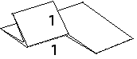
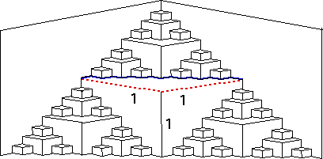

1. (a) For simplicity, suppose the first cut has length 2 and the first fold has length 1. Then the first cut folds to two cuts, each of length 1.
|  |
Here are the lengths of this fold and cut, shown to set the scale of later folds and cuts.
Here we are interested in just the front cuts, illustrated by the two dashed lines.
The back cuts, illustrated by the bold lines shown here, are trickier and will be considered separately.
|  |
Here is a tabulation of the lengths of the front cuts.
| step | number of front cuts | length/cut |
| 1 | 1 | 2 = 21 |
| 2 | 3 | 1 = 20 |
| 3 | 9 | 1/2 = 2-1 |
| 4 | 27 | 1/4 = 2-2 |
| ... | ||
| n | 3n-1 | 22-n |
So the total length of the front cuts is
The sum in parentheses is a geometric series with ratio 3/2, hence it diverges.
That is, the collection of all front cuts has infinite length.
In the limiting shape, each back cut has length sqrt(2)/2 times the length of the corresponding front cut. Seeing this is a bit tricky. Given this, the collection of all back cuts has infinite length, with step n contributing 3n-1 back cuts each of length sqrt(2) 21-n.
Return to PaperFolding Lab.